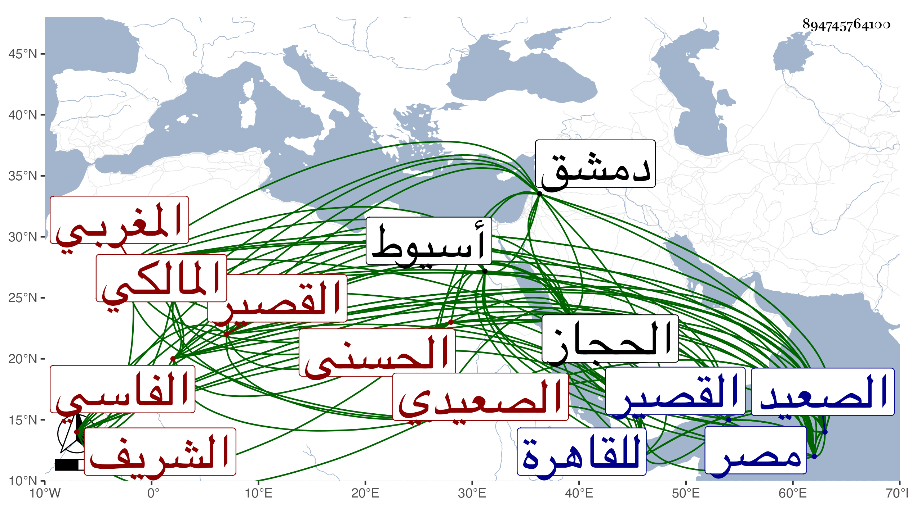

0902Sakhawi.DawLamic.ITO20230111-ara1.EIS1600.894745764100
Biography ID: 894745764100
384
محمد بن أبي بكر بن أحمد بن إسماعيل بن عبد الوهاب بن عبد الغفار بن يحيى بن إسماعيل الشريف الحسنى المغربي الفاسي الأصل الصعيدي المالكي نزيل الحجاز ويلقب أبوه بالناظر . ولد في يوم الجمعة سابع عشر جمادى الثانية سنة إحدى وعشرين وثمانمائة في نواحي الصعيد من بلاد مصر وربى في نواحي أسيوط من بلاد الصعيد فقرأ بها القرآن وتلا به لأبي عمرو على مؤدبه الشريف محمد بن أحمد بن علي التلمساني وحفظ العمدة وأربعي النووي والرسالة وأكثر المختصر الفرعيين وجميع جمع الجوامع وألفية ابن ملك والملحة والجرومية وتصريف العزى والرحبية في الفرائض وايساغوجي والنفحة الوردية والبعض من المفصل والحاجبية وأكثر ناظر العين والصدقات في علم الهيئة وألفية العراقي والشاطبيتين والساوية في العروض ، وارتحل للقاهرة في سنة ثلاث وأربعين فأخذ النحو عن الزين عبادة والشهاب الابشيطي والشرواني وعن الأول والشهاب بن تقي الفقه وأخذ الفرائض عن أبي الجود وابن المجدي وعنهما وعن النور الوراق والشهاب الخواص الحساب وعن ابن المجدي فقط المقنطرات وعلم الوقت وبحث غالب ألفية العراقي على القاياتي وعنه وعن عبد الدائم الأزهري والعبادي أخذ الأصول وأخذ المعاني والبيان عن العز الكناني الحنبلي والنور البوشي الخانكي والشرواني وعنه وعن الابشيطي المنطق ، وارتحل لدمشق في سنة أربع وأربعين فسمع العلاء الصيرفي وأبا شعر ثم عاد لمصر وركب البحر من القصير في سنة ثمان وأربعين فدخل لبندر ينبع فاتصل بصاحبها الشريف معزى فجهزه للحج ثم زار النبي صلى الله عليه وسلم وأقام عند معزي يقرأ أولاده إلى أن لقيه البقاعي في ربيع الآخر من التي بعدها . فكتب عنه من نظمه مما مدح به ابن حريز :
| هنيئا مريئا يا ذوي العلم والرتب | بجمعكم للأصل والفرع والحسب |
إلى آخر القصيدة وأرجوزة في عد المكي والمدني وما علمت شيئا من خبره بعد ذلك .
